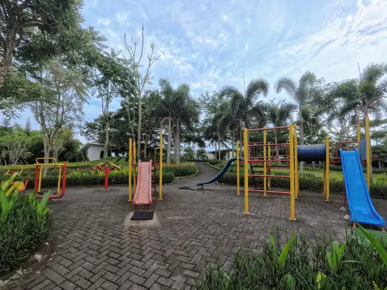

Op vakantie dichtbij huis: drie heerlijke vakantieparken vlakbij Nijmegen
Gepubliceerd op 24 februari 2026
Onderdeel van de gids Overnachten in Nijmegen
Blijf je tijdens de vakantie graag dichtbij huis, maar wil je wel het gevoel hebben dat je er heerlijk tussenuit bent geweest? In de omgeving van Nijmegen vind je gelukkig volop vakantieparken waar je alleen of met anderen optimaal kunt genieten. Met of zonder kinderen: er zit voor iedereen iets tussen. In dit artikel zetten we drie opties voor je op een rijtje.
De Oude Molen, Groesbeek
Op slechts 8 kilometer van Nijmegen vandaan ligt vakantiepark De Oude Molen. In de landelijke wandel- en fietsomgeving van dit park kom je tot rust in een mobile home of chalet. Beiden zijn compleet ingericht en beschikken over een heerlijk terras! Hier kun je ‘s avonds samen eten of een gezellig potje kaarten.
Ook kinderen komen hier niks tekort. Zij kunnen heerlijk zwemmen in het ruime zwembad en roetsjen van de 50-meter lange glijbaan. Of je kinderen nemen deel aan het animatieteam, terwijl de volwassenen de sauna en het bubbelbad bezoeken.

De Zeven Heuvelen, Groesbeek
In een prachtig heuvelachtige omgeving ligt De Zeven Heuvelen, nabij ‘Het Rijk van Nijmegen’, zoals de omgeving ook wel wordt genoemd. Voor wie meer op zoek is naar een resort met volop luxe is dit dé perfecte locatie. Je vertoeft hier in mooie bungalows en geniet van een groot wellnesscentrum. Hier kun je baantjes trekken, naar de sauna of een beautybehandeling reserveren. Ga je liever voor iets sportievers? Je huurt gemakkelijk e-bikes waar je bijvoorbeeld mee naar de nabijgelegen golfbaan fietst.
Europarcs De Hooge Veluwe, Arnhem
Natuurliefhebbers opgelet: in dit park verblijf je midden in de Veluwse bossen. Je slaapt hier in luxe bungalows tegenover het Nationaal Park de Hoge Veluwe. Het is een uitstekende plek voor lange wandel- of fietstochten, maar er zijn ook genoeg andere activiteiten in de omgeving.
Ben je met de kinderen op vakantie? Kies voor een middagje Burgers’ Zoo of ga een dagje naar Koningin Julianatoren. Op het park zelf is ook genoeg te doen. Kom in beweging op de sportvelden, trek baantjes in het binnen- en buitenzwembad of ontspan in de infraroodcabine van het wellnesscentrum. Hoewel dit park iets verder van Nijmegen vandaan ligt dan de andere parken, is het zéker de moeite waard.

Vakantie in eigen land
Met een vakantie dichtbij huis is helemaal niks mis, zolang je weet waar je de leukste plekjes kunt vinden. Op zoek naar een vakantiepark in Gelderland, in de omgeving van Nijmegen? De bovenstaande opties zijn ideaal voor alle leeftijden en zorgen gegarandeerd voor een ontspannen vakantie.
Terug naar de beginpagina